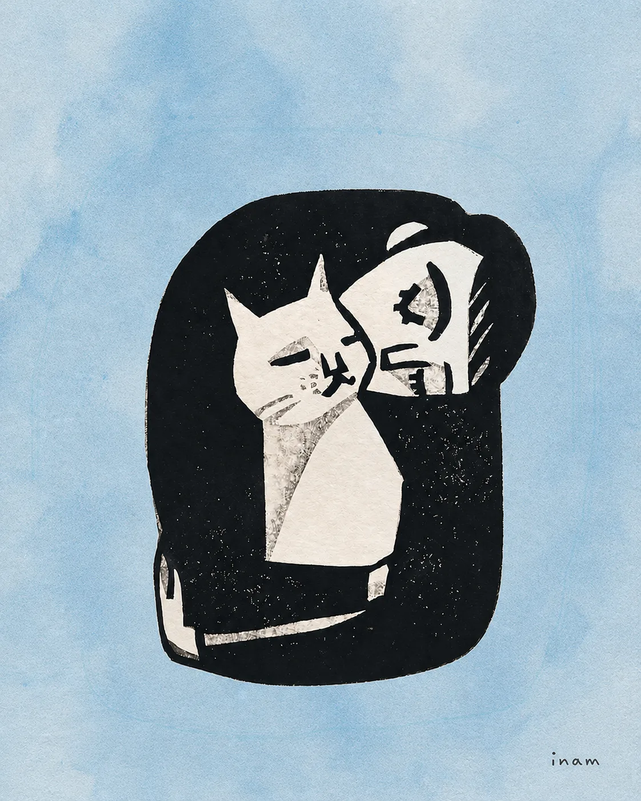
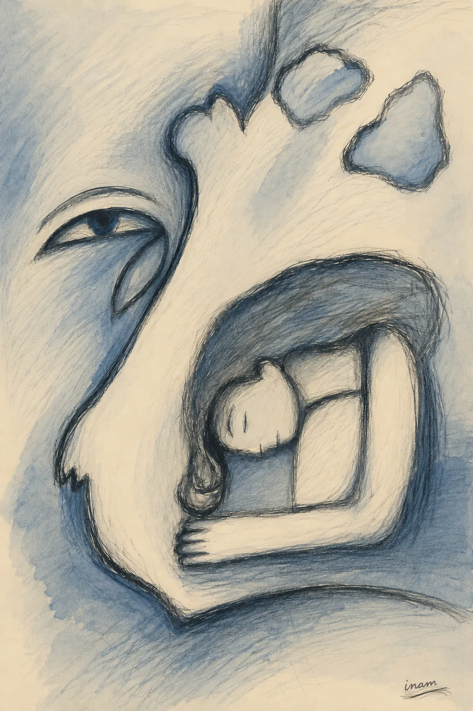
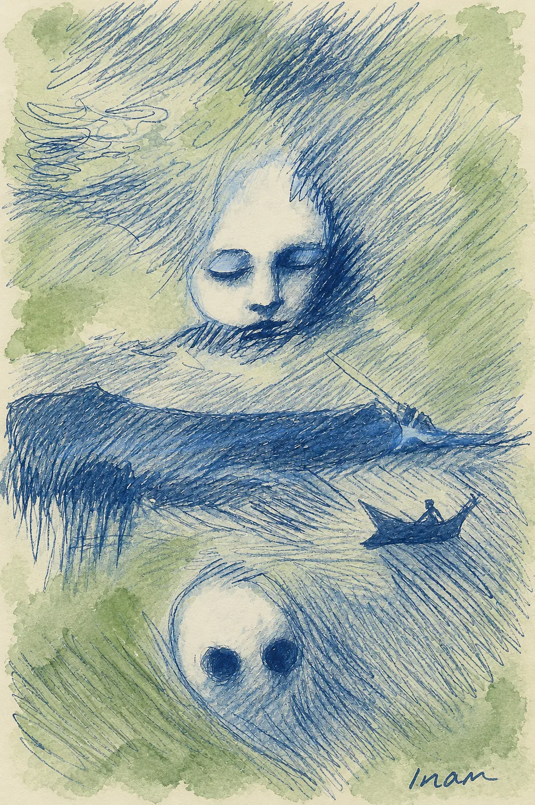
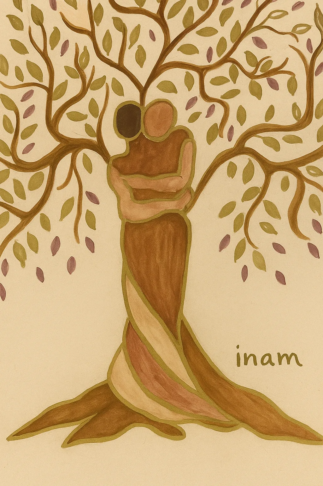
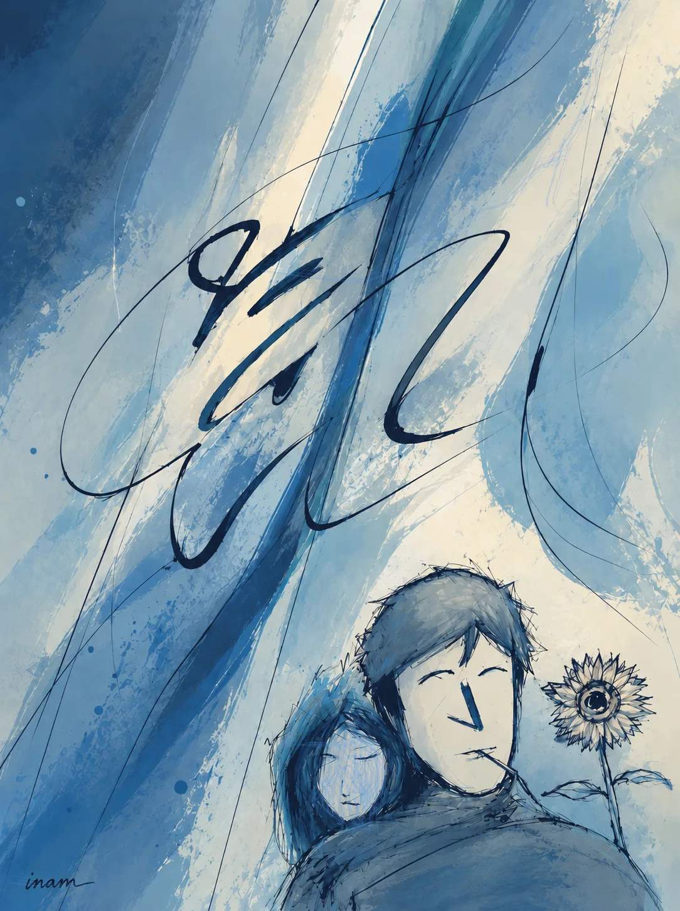
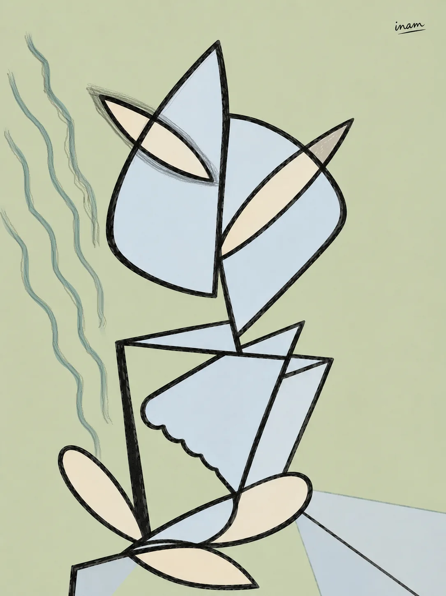
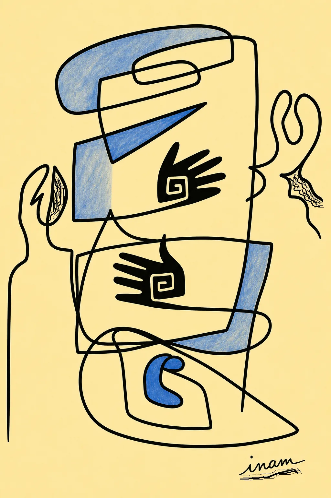
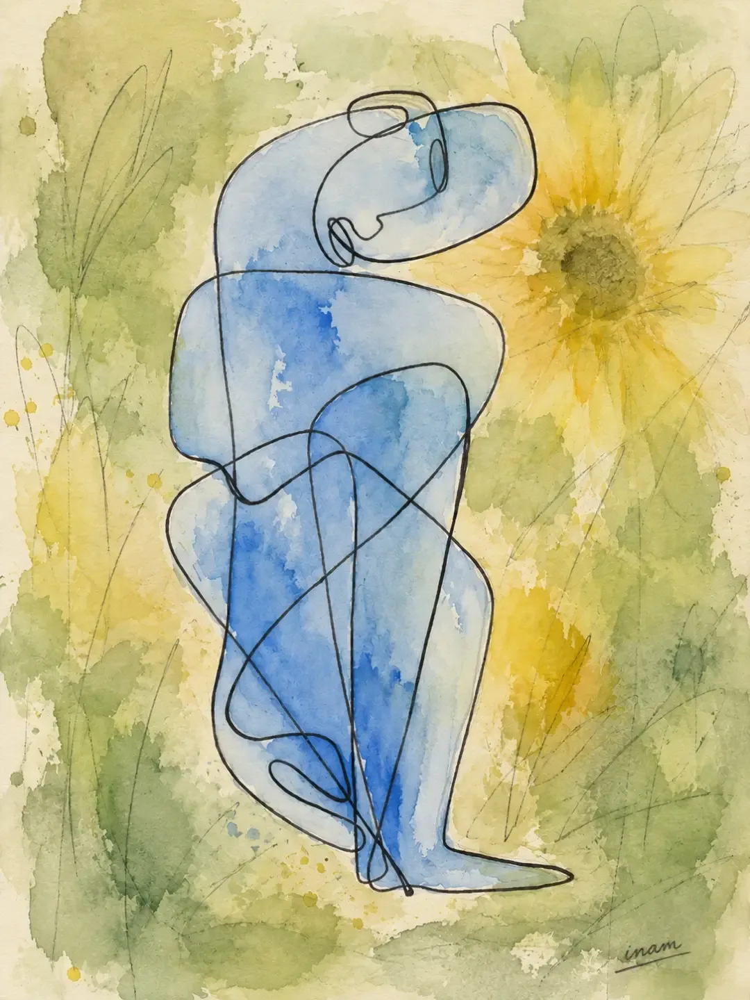

Eternal Embrace

Hollowed

The Mending

Before the Storm

Facing Inward

The Trip

The Quiet After

Synthetic Reverie

The Weight

Rooted Awakening

Before Sunrise

Shared Silence

The Divided Self

The Space Between Us

The Burden of the Abyss
These start as things I see with my eyes shut.
Some of them are tender and some of them are not, and I have given up sorting them into two piles. A dream never tells you which kind it is until you are already inside it.
Most are drawn in one line, without lifting, because that is how they arrive — all at once, or not at all.